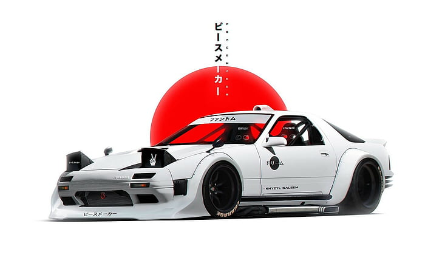

The Mazda RX-7 is a legendary Japanese sports car with a rich history. Here's some key information about the
RX-7:
- The RX-7 is renowned for its innovative rotary engine technology, which made it stand out from other
sports cars.
- It was first introduced in the 1970s and went through several generations, each with its unique
characteristics and improvements.
- The RX-7 gained international recognition when it appeared in the movie "Fast & Furious: Tokyo Drift,"
showcasing its drifting prowess.
- Enthusiasts love the RX-7 for its balanced handling, lightweight design, and distinctive pop-up
headlights.
- Despite its small size, the RX-7 has a strong racing pedigree and has won numerous motorsport events.
- Production of the RX-7 ended in the early 2000s, but it remains a cherished classic among car enthusiasts.